| # | BID | Beatmap Info | Mods | BPM | Hit Length | Max Combo | CS | AR | OD | Notes |
|---|---|---|---|---|---|---|---|---|---|---|
| 1 | 4559157 | NM | 190.0 | 3:32 | 1342 | 4.0 | 9.3 | 9.0 | 跳 | |
| 2 | 3920723 | 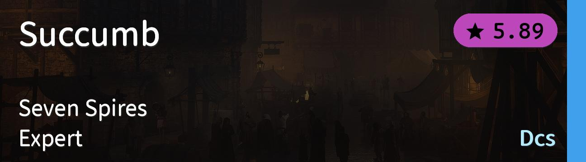 | NM | 179.0 | 3:28 | 2011 | 4.0 | 9.3 | 9.0 | 串 |
| 3 | 4125499 | 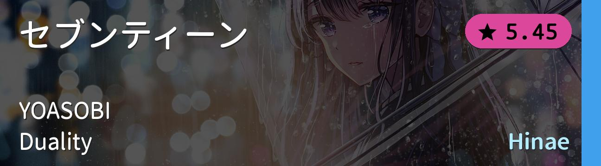 | NM | 140.0 | 3:08 | 1369 | 4.0 | 9.3 | 9.0 | alt |
| 4 | 4540987 | 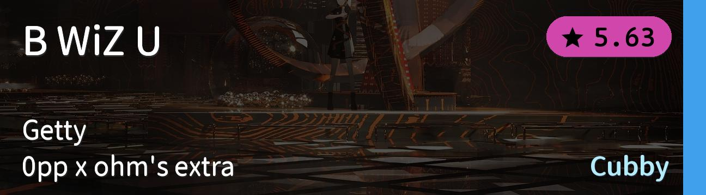 | NM | 175.0 | 2:10 | 1145 | 4.0 | 9.4 | 8.5 | tech |
| 5 | 2900096 | NM | 215.0 | 4:02 | 1860 | 3.6 | 9.2 | 8.6 | 高速 | |
| 6 | 425779 | 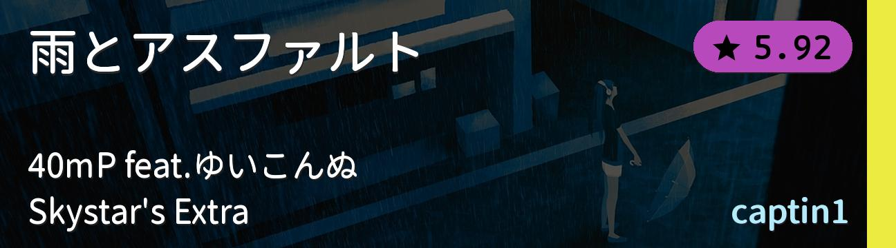 | HD | 190.0 | 3:44 | 1375 | 4.0 | 9.3 | 8.3 | 有人说很简单 |
| 7 | 3158362 | 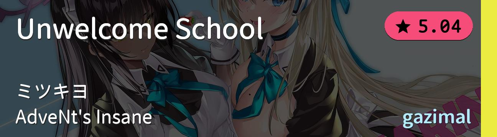 | HD | 180.0 | 2:00 | 865 | 4.0 | 8.0 | 8.0 | AR8 gimmick |
| 8 | 4589836 | 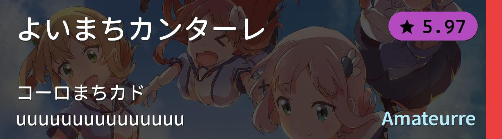 | HR | 171.0 | 3:24 | 1464 | 5.2 | 10.0 | 10.0 | 1位置放小妹妹有问题吗？ |
| 9 | 888011 | 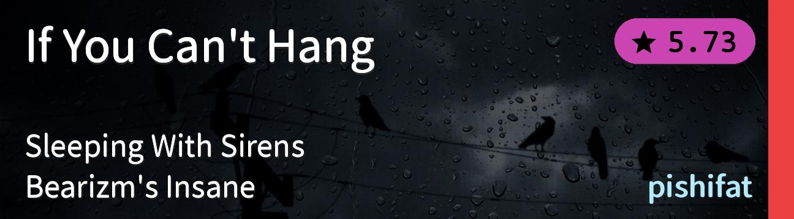 | HR | 192.0 | 3:49 | 1270 | 6.76 | 10.0 | 10.0 | 经典老图 |
| 10 | 3830641 | 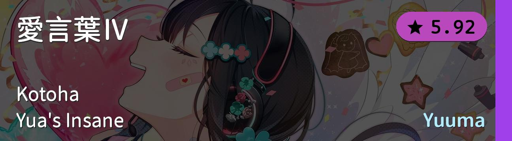 | DT | 208.5 | 2:20 | 1182 | 4.2 | 10.2 | 9.24 | DT 综合 |
| 11 | 3123098 | 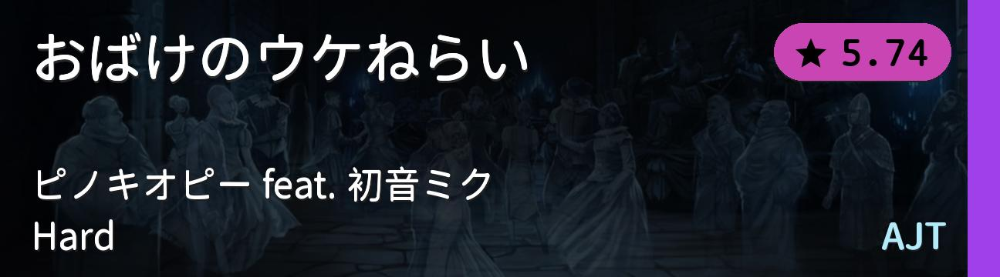 | DT | 222.0 | 2:08 | 1145 | 4.0 | 9.67 | 8.44 | 按得明白吗？ |
| 12 | 4093504 | 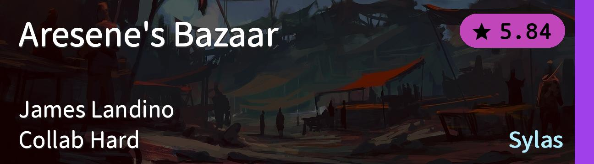 | DT | 232.5 | 1:29 | 778 | 3.5 | 9.67 | 8.78 | 高速切 |
| 13 | 3432438 | 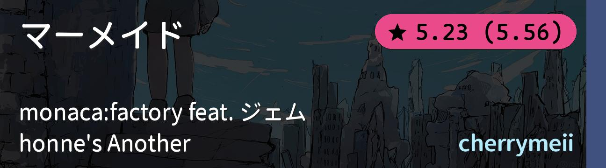 | FM | 224.0 | 3:07 | 1113 | 4.1 | 9.0 | 8.0 | 高速单点 |
| 14 | 3396297 | 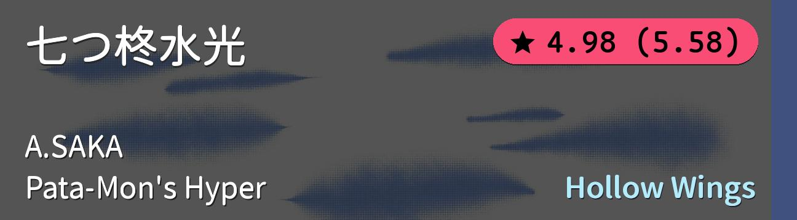 | FM | 170.0 | 2:54 | 1113 | 5.0 | 8.0 | 8.0 | Pata-Mon's Antimod |
| 15 | 1061134 | 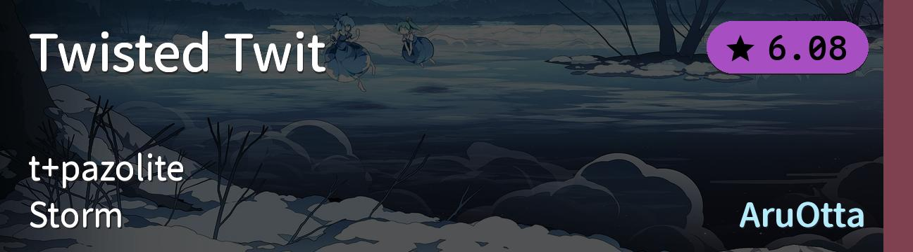 | TB | 180.0 | 5:10 | 3001 | 4.0 | 9.5 | 8.0 | 练就完事了 |